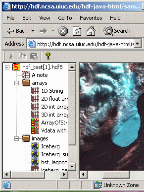

|
HDF Web-browser plugin is a windowed
browser plugin that is launched from a web browser to display HDF4 and HDF5
files. A browser plugin is a software program that extends the power
of Web browser by adding more features and supporting more types of content
than what the standard browser provides.
HDF Web-browser plugin is not HDFView. HDF Plug-in and HDFView are different software. HDFView is Java based standalone applcation that is used to view and edit HDF4 and HDF4 files and runs on multiple platforms. It has more browsing features and edting features. HDF Web-browser plugin is "light" browser that has less browsing features that HDFView. It has no editing feature. For more information on HDFView, visit http://hdf.ncsa.uiuc.edu/hdf-java-html/ HDF Web-browser plugin is not an Applet. Although both plug-in and applet are launched in web browser, there is a major difference between the two. Like other software, a plug-in is downloaded and installed only once. It is installed onto local disk and launched from local machine. Applets are downloaded at each invocation. The advantage of network traffic of a plug-in over an applet is obvious. |
 |
The current HDFPlugin is Windows only application. It is implemented as an active document servers . An active document server such as Microsoft Office Binder or Internet Explorer hosts documents of other application types called Active documents. An active document is a COM (Component Object Model) component that shows some data (charts, sheets, text documents, bitmaps) which is given by Active Document Server.
The HDFPlugin is an active document server. When you put an HDF file into Internet Explorer, the Internet Explorer (Container) calls the HDFplugin (Server or plugin) to show HDF4 and HDF5 files. The HDFplugin can also run as a standalone application. You can open HDF files directly from HDFPlugin. For more details, read the User's Guide